Semana 3
BRECHA TECNOLÓGICA
EN CUANTO A DEPORTE Y ENTRENAMIENTO:
Madrid. - Una de las novedades que se utiliza para obtener datos biométricos es exponer a los deportistas a estimulantes externos, como lo que se hace con cámaras hiperbáricas, las cuales simulan altitud menor a 2000 msnm, lo que incrementa la cantidad de oxígeno en sangre. Los datos que resultan de este examen son la capacidad de soportar este oxígeno, o cuánto puede producir el deportista.
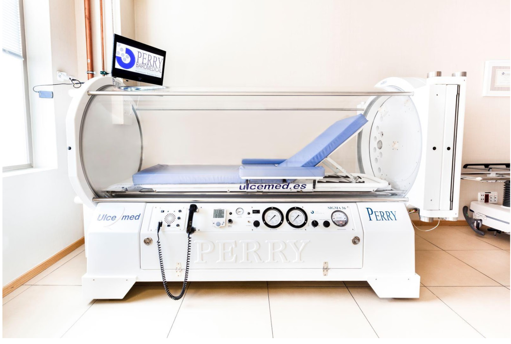Figura 1. Cámara hiperbárica. Fuente: https://www.loottis.com/que-es-la-camara-hiperbarica/
El túnel de viento es un equipo que conforma un factor clave de la biomecánica. Con este dispositivo se pueden simular escenarios diversos, que ayudan a ampliar la cantidad de datos que se pueden medir antropométricamente (con un entrenamiento regular con el dispositivo).
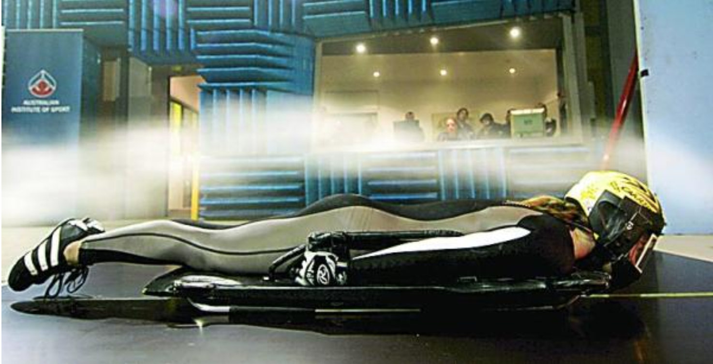Figura 2. Túnel de viento.Fuente: https://www.larazon.es/historico/7236-las-nuevas-tecnologias-mejoran-el-rendimiento-deportivo-OLLA_RAZON_318590
Mejoras en prendas deportivas que otorgan mayor libertad de movimiento. Los mejores ejemplos para esto son: la modificación de la raqueta de Rafael Nadal que lo obligaba a cambiar su forma de agarre, y los trajes de baño del equipo estadounidense en las Olimpiadas de la marca Speedo, los cuales reducen la fricción del agua haciendo que los atletas adquieran mayor velocidad en el agua.
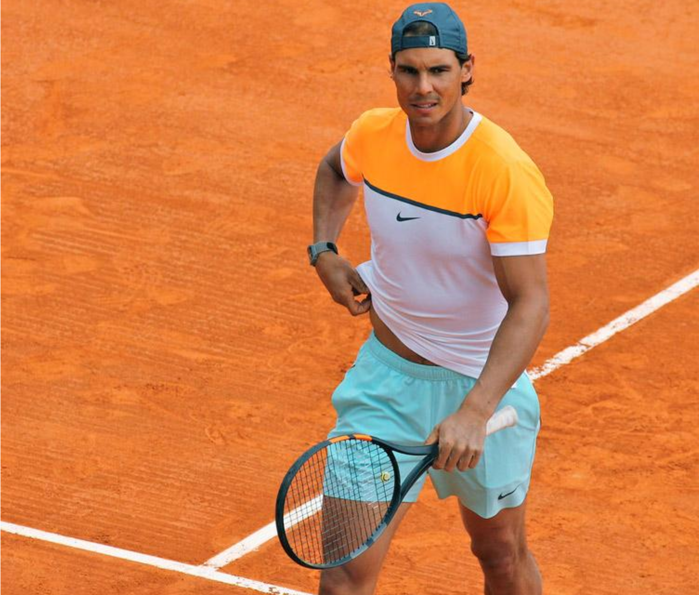Figura 3. Rafael Nadal sosteniendo la raqueta mejorada. Fuente: https://www.tenisweb.com/rafael-nadal-una-nueva-raqueta/
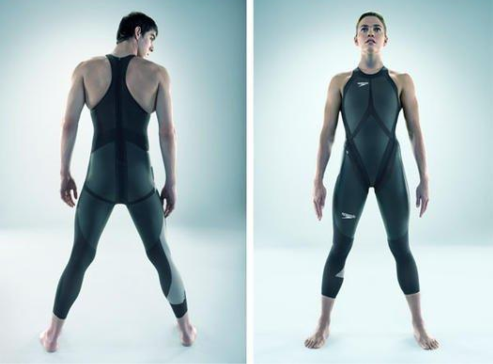Figura 4. Bañador marca Speedo. Fuente: https://elsemanaltecnologico.wordpress.com/2014/04/03/polemica-la-natacion-la-tecnologia-y-speedo/
EN CUANTO A LA TOMA DE DATOS ANTROPOMÉTRICOS:
El uso de pulsímetros es la manera más difundida de obtener mediciones del pulso cardiaco. En Perú se usando estos dispositivos para acceder a los datos de los atletas enfocados en deportes de velocidad y resistencia como el atletismo. Sin embargo, muchas veces no se toma en cuenta factores que definen estos valores como es el largo de paso o la fuerza con la que se ejerce la marcha. Estos factores a su vez son desencadenados por otros aspectos de la morfología de los deportistas, como, por ejemplo, el hecho de tener pie plano.
Es en este punto donde se hace notorio el desempeño de los equipos de medición, los cuales en el caso del país son papel y tablas de datos.
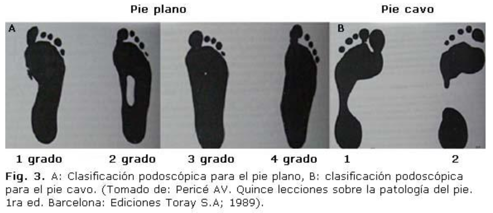REQUERIMIENTOS DE DISEÑO
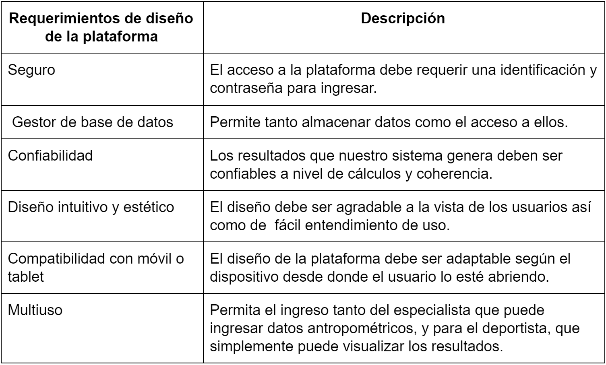Figura 5. Tabla de requerimientos de diseño
CONCEPTOS DE SOLUCION
Concepto de solución 1:
Aplicativo móvil conversor de voz a texto capaz de organizar los datos en una hoja de Microsoft Excel conforme se registran
Esta aplicación para teléfono móvil 1) recibe como entrada la voz del usuario nombrando el parámetro y la medida correspondiente a este, 2) convierte la voz a texto y 3) genera una tabla de dos columnas adyacentes: una para el nombre del parámetro y una para la medida.
Este sistema facilita la adquisición manual de medidas por un solo profesional y reduce el tiempo que toma registrar las medidas en la plantilla.
La siguiente imagen describe con más detalle el proceso mediante un ejemplo:
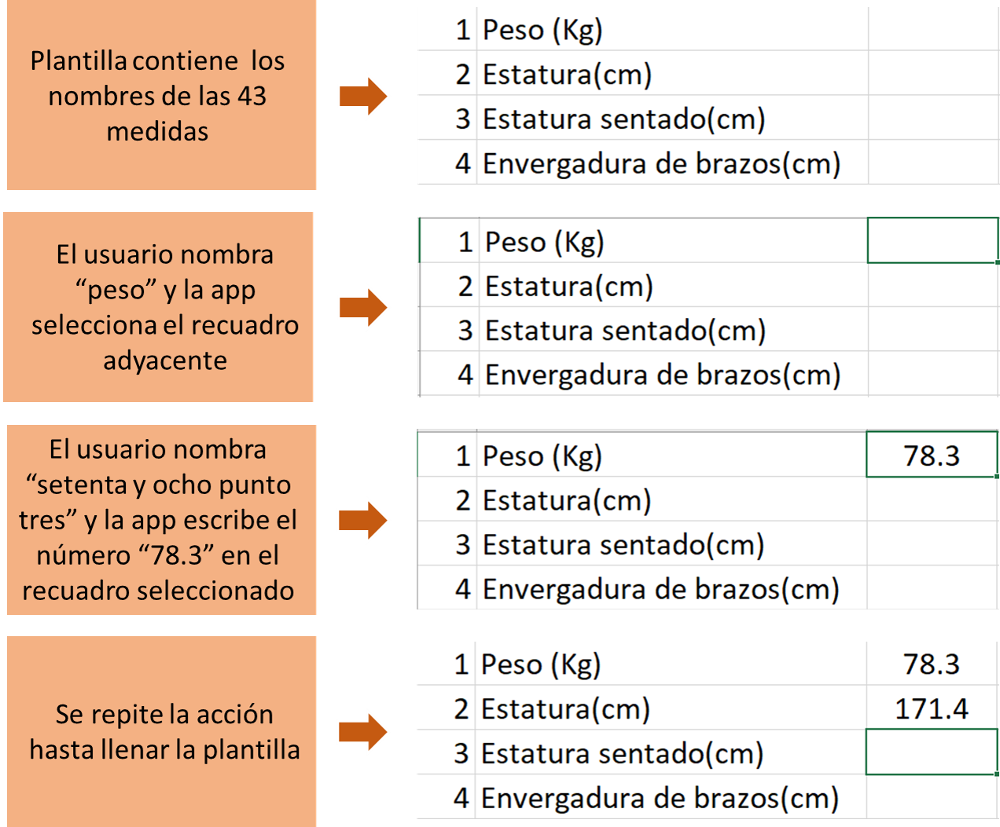Figura 6. Funcionamiento del aplicativo móvil conversor de voz a texto capaz de organizar los datos en una hoja de Microsoft Excel conforme se registran.
Concepto de solución 2:
Aplicativo móvil generador de un registro de bases de datos
Este aplicativo para teléfono móvil sistema recibe los datos antropométricos previamente tomados por el especialista y en base a ellos crea un registro con la información antropométrica de cada deportista y un historial para el mismo.
Asimismo, organiza la información según parámetros como: deporte, edad, sexo, biotipo y antecedentes médicos. Además, elabora resúmenes de cada medida antropométrica en base a un parámetro a escoger para facilitar la visualización de los datos.
La siguiente imagen describe con más detalle el proceso mediante un ejemplo en donde se organiza la información en tablas y se elabora un gráfico peso vs. tiempo:

Figura 7. Funcionamiento del aplicativo móvil generador de un registro.
Concepto de solución 3:
Sistema de recolección y tratamiento de información antropométrica basada en deportes
Este sistema permite a los especialistas el ingreso de los datos antropométricos a un registro que almacena la información. Así como un tratamiento de datos a nivel individual y general, según el deporte, con el objetivo de un mejor control antropométrico a los deportistas calificados.
a. A nivel personalizado, se podrá visualizar la composición corporal en cinco fracciones (masa de piel, tejido adiposo, muscular, ósea y residual/otros) en un modelo de cuerpo humano, donde se mostrará el porcentaje de masa de cada componente y se mostrarán en distintos colores en proporción al porcentaje que tenga el deportista, si este cumple con el objetivo propuesto por el nutricionista, estará de color verde, de lo contrario, estará de color rojo. De tal manera, se podrá monitorear el avance del deportista mediante la variación de estas proporciones visualmente apreciables.
b. A nivel general, el deportista podrá ser comparado con los demás deportistas del Instituto Peruano del Deporte según las variables de interés del deporte correspondiente, mediante tratamiento estadístico como percentiles.
Pasos de los cuales solo los 5 primeros serán incluidos y tratados en este curso, debido a que el equipo no será responsable de la recolección de datos para el propio tratamiento
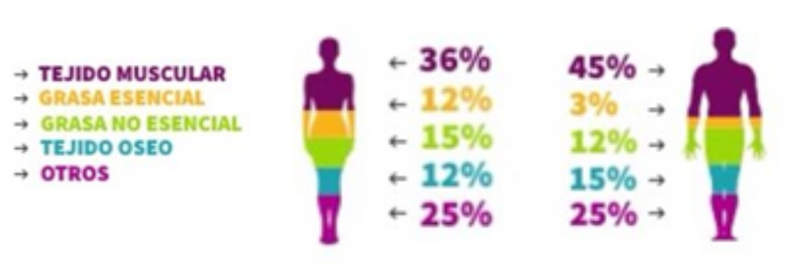Figura 8. Proporción corporal de parámetros antropométricos.
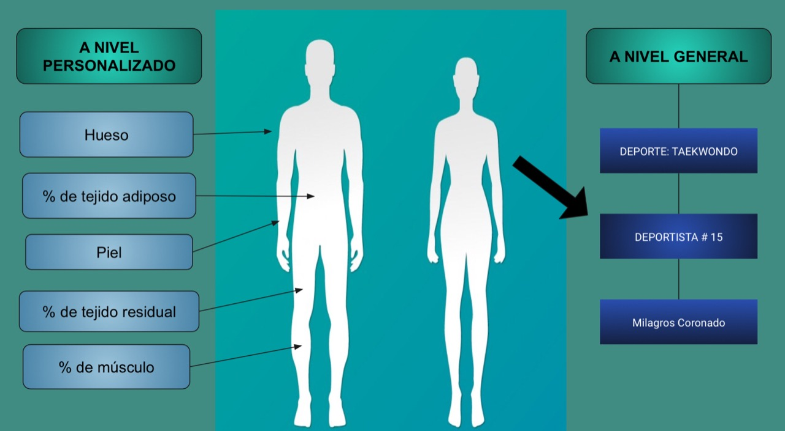Figura 9. Sistema de recolección y tratamiento de información antropométrica basada en deportes.
RESTRICCIONES DE LOS CONCEPTOS
Restricciones de la propuesta 1:
1) Toma de datos:
El sistema que desarrollaremos se enfocará en la toma de datos de manera indirecta, esto es, que la medición a los deportistas será hecha por los profesionales encargados manteniendo las técnicas regulares. Estos datos serán recién ingresados a nuestro sistema.
2) Almacén de la información:
El servidor que guardará la información que sea ingresada, los gráficos u otros derivados de estos no será desarrollado en nuestra solución. Esto es porque debido al corto tiempo y la complejidad que supone el crear una base de datos, organizarla para que este completa y cumpla con los estándares demanda una gran cantidad de recursos.
Restricciones de la propuesta 2:
1) Toma de datos:
sistema que desarrollaremos se enfocará en la toma de datos de manera indirecta, esto es, que la medición a los deportistas será hecha por los profesionales encargados manteniendo las técnicas regulares. Estos datos serán recién ingresados a nuestro sistema.
2) Almacén de la información:
El servidor que guardará la información que sea ingresada, los gráficos u otros derivados de estos no será desarrollado en nuestra solución. Esto es porque debido al corto tiempo y la complejidad que supone el crear una base de datos, organizarla para que este completa y cumpla con los estándares demanda una gran cantidad de recursos.
3) Análisis de los datos:
En este punto cabe resaltar que, si bien el sistema facilitará la visualización de la información recolectada, asimismo que la guardará para su fácil acceso posteriormente; dependerá de los profesionales encargados el cómo interpretarla y aplicarla en la creación de guías prácticas. Sin embargo, como objetivo secundario tenemos la opción de realizar un pre análisis de estos datos los cuales puedan servir como precedente en la creación de guías futuras.
Restricciones de la propuesta 3:
1) Toma de datos:
El sistema que desarrollaremos se enfocará en la toma de datos de manera indirecta, esto es, que la medición a los deportistas será hecha por los profesionales encargados manteniendo las técnicas regulares. Estos datos serán recién ingresados a nuestro sistema.
2) Almacén de la información:
El servidor que guardará la información que sea ingresada, los gráficos u otros derivados de estos no será desarrollado en nuestra solución. Esto es porque debido al corto tiempo y la complejidad que supone el crear una base de datos, organizarla para que este completa y cumpla con los estándares demanda una gran cantidad de recursos.
3) Análisis de los datos:
En este caso, se deberá recolectar una cantidad de datos confiables para que después sea posible el análisis de estos y generar una conclusión confiable.
SELECCIÓN DEL MEJOR CONCEPTO
A continuación se presenta la tabla de valoración:
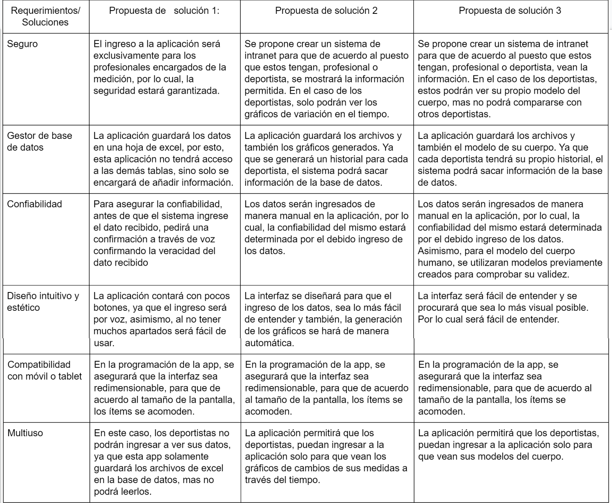Figura 10. Tabla de valoración
De acuerdo a la tabla de valoración realizada en el punto anterior, se puede observar que tanto la solución dos y tres cumplen los requisitos presentados. Sin embargo, cabe resaltar que después de haber tenido dos visitas al IPD, hemos podido observar que el sistema que propondremos deberá enfocarse en la fácil visualización e interpretación de las medidas antropométricas correspondientes y, asimismo, deberá facilitar la comparación de los resultados en los deportistas para poder crear una guía que los profesionales encargados puedan usar como base para sus diagnósticos. Lo cual nos lleva a tomar los dos siguientes puntos como importantes. Primero, una fácil visualización de los cambios de las medidas antropométricas en los deportistas a través del tiempo. Segundo, la facultad de poder crear guías base estándar, a partir de los datos tomados, que permitan a los profesionales realizar una comparativa para poder tener una mejor noción sobre cuáles son los deportistas que necesitan un control más exigente con respecto a sus compañeros. Por lo cual, la solución que se escogerá es la solución número 2:
Aplicativo móvil generador de un registro de bases de datos.
PLAN DE TRABAJO
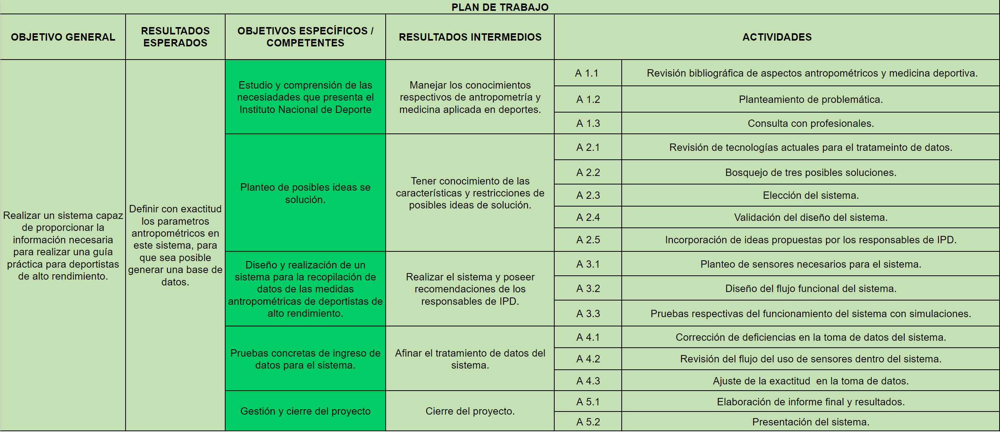Figura 11. Tabla del plan de trabajo.

Figura 12. Diagrama de Grantt para el plan de trabajo.
REFERENCIAS
Marrero L, Fleites L., Martínez M., Lara J., Fortún P., Jiménez M. Triple artrodesis en el tratamiento de las deformidades podálicas en la edad pediátrica. Revista Cubana de Ortopedia y Traumatología. 2011. Consultado: 07/09/2019. Disponible en: http://scielo.sld.cu/scielo.php?script=sci_arttext&pid=S0864-215X2011000100001
La Razón. Las nuevas tecnologías mejoran el rendimiento deportivo. Consultado: 07/09/2019. Disponible en: https://www.larazon.es/historico/7236-las-nuevas-tecnologias-mejoran-el-rendimiento-deportivo-OLLA_RAZON_318590
Fisicología Blog. (2018). COMPOSICIÓN CORPORAL, ¿DE QUÉ ESTAMOS HECHOS? [Fragmento de Infografía]. Recuperado de https://www.facebook.com/fisicologiaonline/photos/a.299424643859073/473057333162469/?type=3&theater